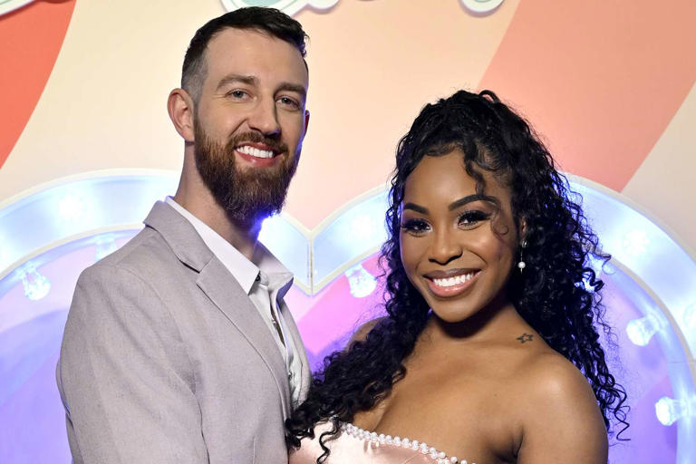
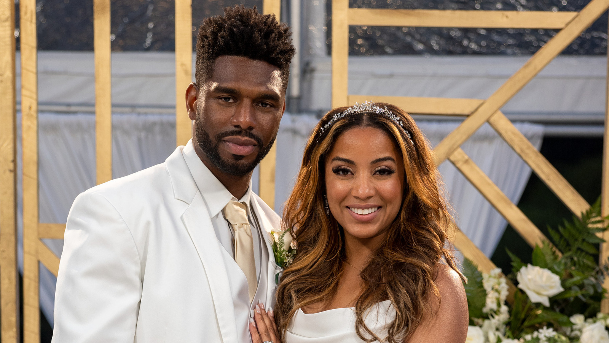
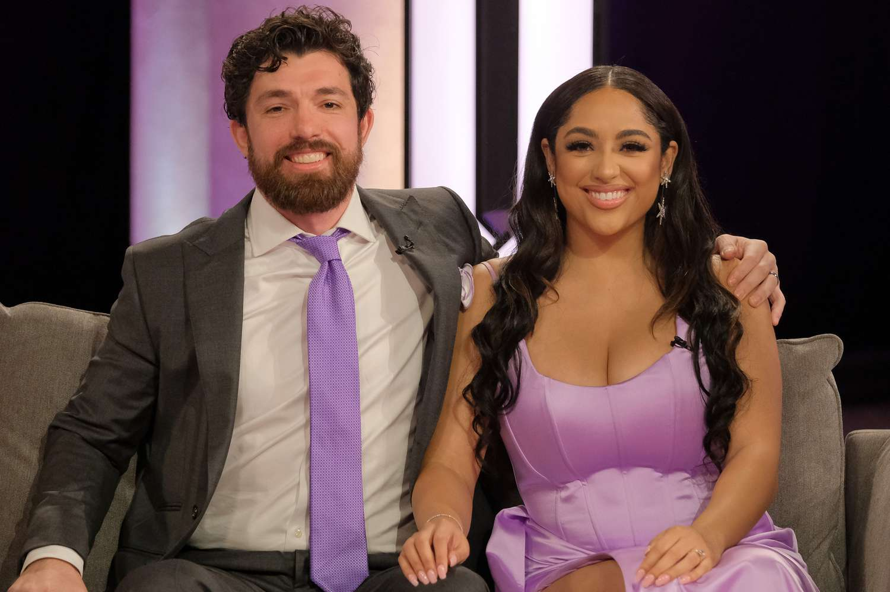
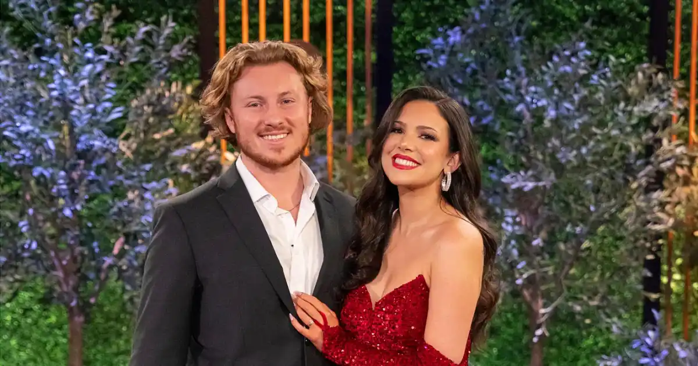

Season 1
Lauren Speed and Cameron Hamilton’s journey on Love Is Blind Season 1 is often considered one of the most genuine and heartwarming success stories in the show’s history. Their connection was immediate and undeniable from the moment they met in the pods, where they formed a bond based on deep conversations and emotional vulnerability.
Lauren, a content creator and influencer, and Cameron, a data scientist, quickly realized they shared a unique level of comfort with each other, and it didn’t take long before they both decided they had found something special. Their chemistry was instant, and unlike many other couples on the show, they faced very few doubts about their connection.
In a season full of drama and uncertainty, Lauren and Cameron stood out for their ease and openness with each other. Their moments together in the pods were filled with laughter, genuine interest, and thoughtful exchanges about their lives, hopes, and dreams.
When it came time to meet in person, their bond only grew stronger. Their relationship was built on such a strong foundation that they easily navigated the challenges of transitioning from the pods to the real world. Lauren and Cameron remained steadfast in their commitment to each other.
By the end of the season, Lauren and Cameron were one of the few couples who not only made it to the altar but also said "I do." Their wedding day was a beautiful reflection of their love, and since then, they have continued to thrive as a couple.

Season 4
Tiffany Pennywell and Brett Brown are one of the standout couples from Love Is Blind Season 4, capturing viewers' hearts with their undeniable connection and shared values. The couple quickly became fan favorites due to their deep emotional bond, shared sense of humor, and mutual respect.
Tiffany, a 37-year-old Senior Marketing Manager, and Brett, a 36-year-old Senior UX Designer, formed a unique connection in the pods, where they initially bonded over their similar life goals and outlooks on love. Their conversations were genuine and heartfelt, and they both shared a desire for a real, lasting partnership. Their chemistry was evident, and despite the initial nerves and uncertainties that come with the Love Is Blind experience, they seemed to find a natural rhythm together.
One of the most beautiful aspects of their relationship is how easily they navigated the transition from the pods to the real world. There was no hesitation or doubt about their commitment to each other, and both seemed fully invested in building a future together. Their calm and grounded approach to love was refreshing to watch, and they faced the ups and downs of the experiment with maturity and open communication.
Brett, with his caring nature, and Tiffany, with her warm and engaging personality, made a perfect match. They supported each other's dreams and ambitions, often seen as a steady and loving presence in each other's lives.
Tiffany and Brett’s story continues to inspire fans, reminding everyone that true love is built on trust, understanding, and shared values.

Season 4
Bliss Poureetezadi and Zack Goytowski's journey on Love Is Blind Season 4 was one filled with unexpected twists, yet their connection stood as one of the most memorable stories of the season. What made their story so special was the way they navigated challenges with patience and openness, ultimately finding love in a way that felt genuine and real.
Bliss, a 33-year-old Senior Program Manager, and Zack, a 31-year-old Lawyer, had an interesting start to their relationship. Initially, Zack was engaged to another woman, but after some reflection and a change of heart, he chose to pursue Bliss. This decision marked the beginning of their true connection, as they were able to build a relationship based on honesty, vulnerability, and respect. The emotional depth that they shared was evident from their conversations in the pods, and it was clear that they were both ready to embrace love when the time was right.
When they transitioned to the real world, their relationship only grew stronger. Despite the bumps in the road, including Zack’s initial uncertainty, Bliss remained patient and understanding. She brought a calm, reassuring presence to their relationship, while Zack showed his commitment to making things work with her. Together, they were able to demonstrate that love doesn’t always follow a linear path, but with open communication and mutual support, a strong partnership can emerge.
Their wedding day was a beautiful culmination of their journey, showcasing how they had both grown individually and together. Bliss and Zack’s relationship may not have followed the typical Love Is Blind trajectory, but their story was a testament to the power of second chances and finding love when you least expect it.

Season 6
Johnny McIntyre and Amy Cortes were one of the standout couples from Love Is Blind Season 6. Their journey was filled with meaningful conversations, emotional growth, and a deep connection that resonated with viewers.
The two first connected in the pods, where they were able to form a strong emotional bond before even seeing each other. Johnny, a restaurant manager, and Amy, a social media manager, both shared a desire for an authentic, long-term relationship, which led to their initial connection. They spent a lot of time discussing their individual backgrounds and what they were looking for in a partner, and their shared values and outlook on life helped build a strong foundation.
However, as they moved beyond the pods and into the real world, Johnny and Amy faced their share of challenges. They navigated the complexities of their differences, especially when it came to how they handled emotional vulnerability and the dynamics of a relationship. Despite some bumps along the way, their commitment to being open and honest with each other kept their connection alive.
Though their journey wasn’t without obstacles, Johnny and Amy demonstrated maturity and patience in their relationship. Their willingness to communicate openly about their concerns and needs was a highlight of their story. While they didn’t get a fairy-tale ending, Johnny and Amy proved that meaningful connections can still form even in the most challenging of circumstances. Their story served as a reminder that love isn’t always easy, but it’s worth the effort.